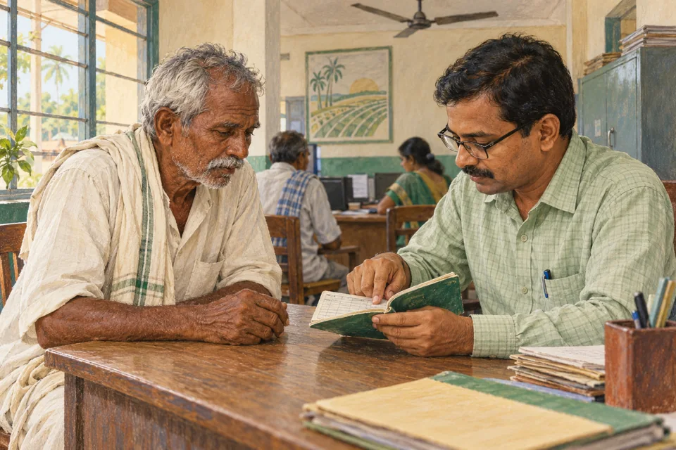

ABC of Modinomics
Read in book
Recently India lost one of the greatest economists of India who had brought about a turnaround in Indian economy through multiple reforms. He is no other than Dr Manmohan Singh whom the country owes a lot. In 2014 when Narendra Modi took over as Prime Minister he was no wizard in economics. However, at the very inception he reportedly called on Dr Manmohan Singh, then out of power, and discussed with him the economic situation of the country. It was not only a gesture of goodwill but also a message that economic reforms would be above political considerations.
From the outset the Modi government was keen to take the country into a self reliant mode and reach out to the common citizens for getting the benefits of the reform initiatives. Keeping that in mind the government launched PM Jan Dhan Yoyana which aimed at expanding the financial literacy to the last miles. Through this innovative scheme the poor people could be able to open zero balance accounts in the banks and access banking services. For the first time the common man could step into a bank branch and open an account. With a nominal amount one could also get insurance coverage under different insurance plans floated by the central government. The impact of the scheme was quite significant in the sense that about 15 million accounts were opened on the inaugural day itself in September 2014. By the end of January, 2021 about 417.5 million accounts were opened under the scheme. It almost covered all the households those who didn’t have a bank account since independence. Besides, linking the bank accounts to the Aadhar number through KYC was another big step towards making the economy more transparent .
The second most important decision of the Modi government was to introduce UPI payment system in the country in 2016. It has become so popular that now even the street vendors are used to it and use of cash transactions has drastically reduced. With an android mobile it has made easier for the public to make payments and transfer funds. Cash withdrawal from bank counters and ATMs has come down drastically . The digital payment system has made the economy more efficient and transparent. The digital payment system in India has become a model for other countries. Now 75% of the retail payment is being routed through UPI system in the country.
The third worth mentioning decision of the government was demonetisation of 500 and 1000 rupee notes in November 2016 to weed out black money from the economy. It was done in such a manner that nobody could sense it beforehand and the whole country was surprised. It was an open secret that those who had hoarded black money had to spend sleepless nights and some of them had to throw it in open or in the river streams. As a result of this decision there was about 24% rise in filing of Income Tax returns the next year. The GST revenue also got an upward surge in post demonetisation period. The overall impact on the economy was quite positive.
Another significant decision of the government was to introduce PM Ujjwala scheme for the benefit of the women of the poor households who had no access to natural gas for cooking. The traditional method of cooking was highly harmful for health and had a bearing on their lives. It was ensured to supply gas cylinders to individual BPL households at a subsidised rate and the subsidy was made good through voluntary surrender of subsidies by those who were able to afford it without subsidy component. This arrangement was unique and saved the oil companies from substantial loss. It’s a scheme which empowered the women and saved them from serious health risks.
In the taxation front the government introduced Goods and Services Tax ( GST) which is considered as a historic measure in indirect taxation in the country. With its roll out in July 2017, it could harmonise the indirect taxes in the country , subsumed several taxes imposed by the Union and the states, and could brought uniformity in the tax regime. It could facilitate one nation, one tax policy. In a complex federal structure like India the success of GST proved the statesmanship of the political leadership across party lines and boosted the economy in many ways. It encouraged Foreign Direct Investment ( FDI) in the country and plugged the leakage in the revenue to a great extent. The compliance cost also came down with a fully operational online system.
Another significant reform having immense contribution to GDP was implementation of real estate reforms. The Real Estate (Regulation and Development) Act , 2016 was enforced with effect from July, 2017. For the first time the real estate sector got a regulatory framework and a regulator to keep a watch on the sector and safeguard the interests of the homebuyers. As a consequence the sector has got largely regulated during last few years and the homebuyers have been assured of timely delivery , no cost escalation or chance of fund diversion and also quality in the housing projects.
During last ten years the Modi magic has changed the face of Indian economy with a pragmatic approach and new ideas for achieving new heights. There has been a constant growth in the economy inspite of various challenges both internal and external. There has been an inclusive environment in the economy and the benefits have been percolated down to the common citizens through schematic interventions like PM Jan Dhan Yojana or PM Ujjwala Yojana which improved their quality of life and empowered them substantially.